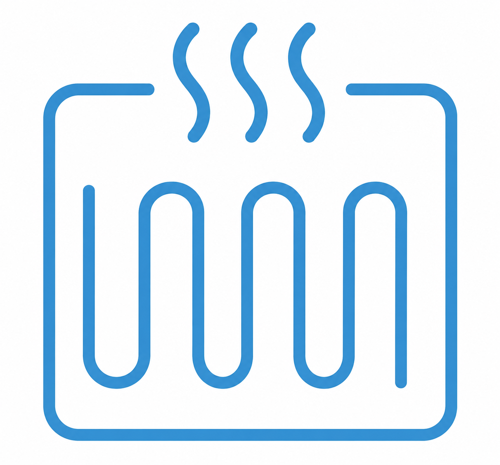

KK Tehnik je uslužni obrt specijaliziran za instalacije grijanja, vodovodne radove i adaptacije kupaonica. Svojim klijentima pružamo kvalitetna, pouzdana i dugotrajna rješenja, uz stručan pristup i pažnju prema svakom detalju.
Naše usluge obuhvaćaju frezanje podova za podno grijanje,ugradnju podnog i centralnog grijanja, izvedbu kotlovnica, vodovodnih instalacija, kompletne adaptacije kupaonica, iskope za gradski vodovod, drenaže te uređenje okućnica. Bez obzira radi li se o novogradnji, renovaciji ili manjem zahvatu, svakom projektu pristupamo odgovorno i profesionalno.
Specijalizirani za frezanje podova za podno grijanje Jedna od naših glavnih specijalizacija je frezanje podova za ugradnju podnog grijanja – moderna, brza i učinkovita metoda koja omogućuje postavljanje sustava podnog grijanja bez uklanjanja postojećih podnih obloga i bez velikih građevinskih zahvata.Preciznim frezanjem kanala u postojeći estrih postavljaju se cijevi za grijanje uz minimalne građevinske radove, kraće vrijeme izvođenja i značajno niže troškove u odnosu na klasične metode.

Godinama uspješno izvodimo instalacije grijanja, vodovodne radove i adaptacije kupaonica, uz profesionalan pristup svakom projektu.
Koristimo provjerene materijale i suvremene metode rada kako bismo osigurali dugotrajna, sigurna i pouzdana rješenja.
Svaki posao izvodimo odgovorno i u dogovorenim rokovima, uz minimalne smetnje za vaš dom ili poslovni prostor.
Svakom klijentu pristupamo zasebno, slušamo vaše potrebe i predlažemo rješenja koja najbolje odgovaraju vašem prostoru i budžetu.
Od savjetovanja i planiranja, preko izvedbe instalacija i iskopa, do završnih radova – sve možete prepustiti jednom pouzdanom izvođaču.
KK Tehnik pruža usluge frezanja podova za podno grijanje, ugradnje podnog grijanja, centralnog grijanja, vodovodnih instalacija, izrade kotlovnica, adaptacije kupaonica, iskopa, izrade drenaže i uređenja okućnica na području Lipovljana, Novske, Kutine, Siska, Petrinje, Popovače, Ivanić-Grada, Zagreba i okolice.
Ponedjeljak: 07:30–17
Utorak: 07:30–17
Srijeda: 07:30–17
Četvrtak: 07:30–17
Petak: 07:30–17
Subota: 08–14
Nedjelja: Zatvoreno